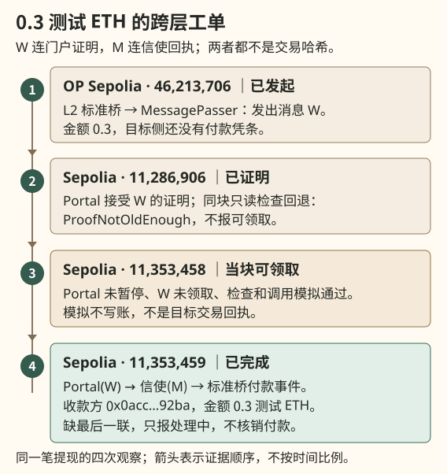

本页目录
先修：13 · ABI、17 · 回执与块锚点、25 · Rollup 的执行与结算、26 · L2 费用；卷末预算单另用27 · 智能账户与代付。实验只处理 OP Sepolia（11155420）→ Ethereum Sepolia（11155111）官方 Standard Bridge 的原生测试 ETH。不是 ERC-20，不涉及币价；不是从 Portal 直接给收款地址打款的另一种提款路径。
把三张交易凭条串成一条消息，而不是一次数据库提交
L2 和 L1 各有自己的执行和排序。L2 桥把金额、发起人、收款人编码成给对端桥的一次 finalizeBridgeETH 调用，再交给信使封装；L2ToL1MessagePasser 将最外层提款记入 L2 状态并发出 MessagePassed。L1 不会因为 Java 服务读到这条日志就自动划款。
证明人向 L1 Portal 提供包含这条提款的存储证明及关联的输出根证据。Portal 在本路线的争议游戏机制下登记该证明；这不等于争议游戏已经兑现所有最终化条件。后来有人用一份合格的证明发起 L1 最终化交易，Portal 尝试调用 L1 信使，信使再调 L1 标准桥。外层交易发起人、证明人、原提款人、L1 收款人是四种角色；本例它们恰好是同一地址，不是跨链关联条件。


| 角色 | 本案事件从哪里读 | 能回答什么 |
|---|---|---|
L2 标准桥 0x4200000000000000000000000000000000000010 |
ETHBridgeInitiated(from,to,amount,extraData) |
业务请求的双方、原始 wei 金额；不是目标侧付款 |
L2 信使 0x4200000000000000000000000000000000000007 与 MessagePasser 0x4200000000000000000000000000000000000016 |
后者的 MessagePassed 载有 L2 信使为 sender、L1 信使为 target 的提款 |
最外层提款身份 W 及发往信使的原始字节；target 在这层还不是用户 |
L1 Portal 0x16fc5058f25648194471939df75cf27a2fdc48bc |
WithdrawalProven(W,…)、WithdrawalProvenExtension1(W,prover)；后来 WithdrawalFinalized(W,success) |
证明提交者、提款是否已由门户处理、对信使的调用是否成功 |
L1 信使 0x58cc85b8d04ea49cc6dbd3cbffd00b4b8d6cb3ef |
RelayedMessage(M) |
版本 1 的信使消息 M 成功中继，不是提款身份 W |
L1 标准桥 0xfbb0621e0b23b5478b630bd55a5f21f67730b0f1 |
ETHBridgeFinalized(from,to,amount,extraData) |
在成功回执里核对这次桥付款的对象与毛额；不是钱包在整块里的净变化 |
这次发起、证明、最终化有三个不同 tx hash。重跑同一笔业务不能按姓名、近似时间、相同金额或两条链上相同的高度关联。本案按注册的链和合约选事件，再连两把键：
- W =
keccak256(abi.encode(nonce,sender,target,value,gasLimit,data))。取MessagePassed的三个 indexed 字以及非 indexed 区内的value / gasLimit / data，重新 ABI 编码求哈希；本案 W 是0xb143bca24a74d3c50838ebe3c5ad9627437b6d0535e77c4e5d29bea43d4c8976。用 W 在 Portal 的证明与最终化事件中找同一条记录。 - 上式中的
data是整段relayMessage(...)调用数据。对本案的 v1 编码，M 是带函数选择器的这段字节的 Keccak，得0x27f93c6ccfe1490f3aea9fb557ccfd91d5df73aa77f71e48c69c30a6ccb446b6。检查内层的发送方是 L2 桥、目标是 L1 桥、方法是finalizeBridgeETH，且双方地址、金额、extraData与发起事件吻合。这才知道以后应在哪座桥查谁的款。不要把信使的 nonce 与提款的 nonce 当成同一个计数器，也不要把 Java 的标准 SHA3-256 当成以太坊 Keccak。
工程上的索引可留 (L2 chainId, L1 chainId, Portal, W) 作跨层业务键；每个事实另存 (chainId, blockHash, txHash, logIndex)。一次交易可以携带多条消息；这个读端有意只接受每个指定事件唯一的两份工单，遇到重复候选即报错，不挑第一条。生产索引还要处理重组：发现块锚点被换掉，应撤回对应观察并重新取证，不是删掉旧记录后继续亮绿灯。
把时间列变成证据列
这是 W-28 / A 的历史截面，时间均为 UTC。不是操作教程，也不是从今日区块倒推的预计到账时间。
| 截至哪个块 | 当时能拿出的证据 | 对客服的答案 |
|---|---|---|
| OP Sepolia 发起交易，46,213,706，2026-07-16 19:25:52 | 成功源回执；桥请求 300000000000000000 wei；MessagePasser 打出的 W 可重算 |
已发起，处理中。没有任何目标侧领取或入账证据 |
| Sepolia 证明交易，11,286,906，07-16 19:50:24 | 同一 W 的证明事件和提交者；在这个块末调用 checkWithdrawal(W,prover) 仍回退，错误数据 0xd9bc01be 对应 OptimismPortal_ProofNotOldEnough() |
已证明，仍在处理。证明被接受，不代表领取条件已齐 |
| Sepolia 11,353,458，07-26 08:20:48 | 同一历史块：paused()=false、finalizedWithdrawals(W)=false、checkWithdrawal(W,prover) 未回退；用实际提款参数与提交者模拟 finalizeWithdrawalTransactionExternalProof 也未回退 |
在这个块末可领取，尚未领。这是一个可领取截面，未声称它是最早可领取的块；模拟没有交易哈希，不能写成已付款 |
| Sepolia 最终化交易，11,353,459，07-26 08:21:00 | 成功目标回执，Portal 的 W 与 success=true，信使的 M，以及 L1 标准桥确认向 0x0acc1db853dace5f7a16b6d7d5b6888ab28292ba 支付 0.3 测试 ETH |
本条桥付款已完成。不是两链交易相等，也不是确认该钱包此后仍保有这些钱 |
资格要以该部署、该证明提交者、该块上的协议检查为准：证明需要成熟，对应争议游戏也要满足可接受结果与最终化条件，还应考虑暂停、先前已领取等状态。即使人已等了很久，也可能根本没提交证明；即使资格已具备，也未必有人提交最终化。本案从证明到目标交易隔了 9 天 12 时 30 分 36 秒，其中可能有可领未领的时间，绝不能据此设置一个通用等待期。迁移到其他 OP Stack 网络、Arbitrum 或其他版本时重新查部署和规则，不照搬这个天数。
为什么「目标交易 status=1」仍不是收款凭条？
L1 外层成功只说明这笔外层交易没有整体回滚；应再读 WithdrawalFinalized.success。它为 true 也只表示 Portal 对直接 target（本例为信使）的调用成功。信使有自己的成功/失败事件；某些下游失败可以被上层捕获，并非总会冒泡成外层 status=0。若只见 FailedRelayedMessage 或无法确认对应的 RelayedMessage(M)，应区分门户已处理与内层未证实，不能让用户在源链重发同一付款。
这笔目标回执的三个关键日志是：L1 桥 logIndex=543、L1 信使 544、Portal 545。先看到桥日志是正常的：内层调用先返回，外层最后发事件。在官方标准桥 finalizeBridgeETH 中，先发事件，再向 _to 发送 _amount，发送失败会回退，日志也不能留在成功执行的桥调用中。因此，要把正确合约的桥事件、成功中继、匹配的 W 和成功目标回执放在一起。兼容旧接口的 ETHWithdrawalFinalized 是同一笔付款的另一种通知，不能再加一遍；也不用找 ERC-20 的 Transfer 日志，因为资产是原生 ETH。
用余额作一次反证。0.3 × 10¹⁸ = 300000000000000000 wei 是桥的付款毛额。收款人恰好还付了这笔最终化的 gas，311828 × 1965426057 = 612874876502196 wei。但收款地址在上述相邻两块末的余额差是 598830284543880678 wei，竟然大于付款毛额。本块这位地址还提交了另一笔不同门户交易。区块级净变化混合了别的活动，既不能顶替本交易的桥事件，也不该拿来否定已经核实的 0.3。这里没有声称验证了钱包的每一笔账。
离线重放：同一个 W，到哪一站能改状态？
在仓库根目录使用 Bash、CPython 3.11 和 Foundry cast 1.7.1（只用 cast keccak，不用 RPC、节点或钱包）。第一次准备 cast 时按第 13 课固定安装步骤运行 bash labs/m04/setup.sh，需要联网；已有该版就不重装。实验数据已经随课归档。
export PATH="${XDG_CACHE_HOME:-$HOME/.cache}/chain-course/m04/bin:$PATH"
WORK=$(mktemp -d)
python3 labs/m07/withdrawal/track.py --case A > "$WORK/w28-full.txt" && cat "$WORK/w28-full.txt"
for view in source-only proof ready without-payment; do
python3 labs/m07/withdrawal/track.py --case A --view "$view" > "$WORK/w28-$view.txt" || break
tail -1 "$WORK/w28-$view.txt"
done
读端 track.py 只读证据包 A。receipt() 将块哈希、交易哈希、日志锚点和发出地址钉在同一条链上；tail() 按 ABI 偏移抽出原始 bytes，replay() 用这段字节复算 W 与 M。observation() 把方法、参数和 blockHash + requireCanonical:true 与归档请求逐一匹配，避免把别的证明人或 latest 的调用结果混进来。checkWithdrawal 没有返回值：成功的空数据 0x 与 RPC error 是两件事；还用布尔 getter 和完整调用模拟作交叉检查。只读模拟即使返回成功，也不能替代资产层的事件。
输入包来自 2026-11-22 07:03 UTC 的只读采集。receipts 保存 eth_getTransactionReceipt 的原始 result，L2 来自 https://sepolia.optimism.io，L1 来自 https://ethereum-sepolia-rpc.publicnode.com；blocks 是相应块对象中 number、hash、parentHash、timestamp 的摘录，不是完整区块。reads 包含 https://sepolia.gateway.tenderly.co 的 eth_call / eth_getBalance 请求参数与 JSON-RPC 响应；simulate 取对应实际 L1 交易的 from、to、gas、input（作 data）、value，在它的父块上只读执行。OP 浏览器的 Withdrawals 索引用于发现线索，其状态文案不进入判定。证据包是历史 RPC 回答，不是自行验证的共识证明或以 receiptsRoot 复核过的默克尔证明。若要按需向归档服务复核，使用包中的链、方法及同一块哈希，节点没有历史状态就记不可用；不要改成 latest。默认复跑不需要这些服务。
正常输入的关键输出预期如下（哈希和金额取自档案，不会随本机时间改变）：
DELIVERY portal=True messenger=True bridgePayment=True
BALANCE payeeBlockDeltaWei=598830284543880678 finalizer=0x0acc1db853dace5f7a16b6d7d5b6888ab28292ba finalTxFeeWei=612874876502196
RESULT COMPLETED asset=testETH
四个对照只改变可见证据，不伪造新块。source-only 完全不用 L1 档案，最后一行是 RESULT PROCESSING reason=no_L1_evidence；proof 只看到证明块和当块检查，结论是 proof_not_old_enough；ready 看到领取预检，返回 RESULT CLAIMABLE as_of=READY not_paid_yet=true；without-payment 在同一成功目标回执中遮去 L1 标准桥发出的全部日志，包括兼容旧事件，故看到 portal=True messenger=True bridgePayment=False，返回 RESULT PROCESSING reason=payment_not_established。这最后一种是「我们缺原件」，不是声称实际付款失败，也不能沿用旧的可领取状态让人再次提交。各视图成功读到自洽的证据时退出 0，包括谨慎的「处理中」；输入/锚点不符或工具缺失是读端错误，非零退出，不得当作业务失败回执。
独立作业 · 去掉一联，余额能补签吗？
新同事只交了 A 的目标外层成功截图、收款地址的块末余额与一个 RelayedMessage，要求报「净收了 0.598830284543880678 测试 ETH」。不拿完整输出照抄：先运行 --view without-payment，写出保留哪些事实、还要补什么；再用完整包补证。按 before + 本桥毛额 − 本笔最终化费 + 其他净变动 = after 手算「其他净变动」。
答案判据： 两份报告使用同一 W、M、目标块/交易哈希。第一份仅认门户与信使成功，不核销付款；第二份写清 ETHBridgeFinalized 的 emitter、logIndex=543、收款地址和 300000000000000000 wei。余额两端分别是 19626928681315265398 和 20225758965859146076 wei，以上等式的残差是 299443159420382874 wei；不能把这项也算进本桥金额。交 $WORK/w28-without-payment.txt、$WORK/w28-full.txt 和一行算式，不附钱包资料。
卷末验收 · X-728：两份工单能不能共用一个成功勾？
交接对象既维护跨层客服台，又维护黑客松演示的代付预算。交两份报告：B 是另一笔公开测试网历史提现，S 是本地智能账户的新预算请求。不接受 A 的截图，不把 B 的提款 W、S 的用户操作 hash、bundler 外层 tx hash 互当主键；两份工单只共用一个交接编号。
B 联 · 跨层状态报告。 另一位用户申请 0.2 测试 ETH，证据包 B 独立附有发起、证明、最终化 三个公开索引入口。从根目录分开保存截面，同时查这次源链执行费与数据费。
for view in source-only proof ready without-payment full; do
python3 labs/m07/withdrawal/track.py --case B --view "$view" > "$WORK/B-$view.txt" || break
tail -1 "$WORK/B-$view.txt"
done
python3 - <<'PY'
import json
r = json.load(open('labs/m07/withdrawal/case-B.json'))['receipts']['source']
print('executionWei', int(r['gasUsed'], 16) * int(r['effectiveGasPrice'], 16))
print('l1DataWei', int(r['l1Fee'], 16) if 'l1Fee' in r else 'unknown')
PY
B 联判据： 交 (chainId, blockHash, txHash)、各阶段可回答的问题、W/M、最终收款地址、金额及单位。L2 高度 46,151,208 已发起不等于 L1 入账；这份 L2 回执本身没有逐笔 L1 批次发布交易或 safe/finalized 头的历史轨迹，不补写这些时间。源链费用已知两项分别为 151165782000 wei 与 19211488249 wei，不是两次扣除本金，也不据此把未记载费用项默认为零。L1 11,277,009 接受证明但检查回退；11,334,819 的领取预检通过；目标块 11,334,820 的 logIndex=161 才有匹配的桥付款事件：收款 0x1ed703b60d9cce105135e04cd344d8bb6dfee2c9，200000000000000000 wei。本案 W 从 0x2982289e 开始、M 从 0x346466e1 开始，交完整值。遮掉桥日志时结论必须降回「付款未证实，处理中」，不因区块古老、领取预检通过或余额上升而核销。
S 联 · 两张预约共用一份预算。 测试活动的账面余额是 1,200,000,000,000,000 wei，其中 400,000,000,000,037 wei 已经为另一张未结单预留，不能动用。本次只允许第 27 课的本地账户给 27 号工单盖章，所需预留仍是 400,000 gas × 2 gwei/gas。先减去旧预约，再预测新单能否受理。下例把算出的可用额存入本地 EntryPoint；旧预约是工单给定的账务输入，不伪造第二笔链上操作。
bash labs/m07/userop/prepare.sh
available=$((1200000000000000 - 400000000000037))
rc=0; python3 labs/m07/userop/run.py --budget-wei "$available" > "$WORK/S-budget.txt" || rc=$?
cat "$WORK/S-budget.txt"
test "$rc" -eq 3 && grep 'RESULT REJECTED_DEPOSIT' "$WORK/S-budget.txt"
S 联判据： 可用额为 799,999,999,999,963 wei，比所需的 800,000,000,000,000 wei 少 37 wei。若只看账面余额，会错批这一单；若把所需预留记成实付，又会错记一笔开支。交出差额算式、允许的账户/目标/方法、paymaster 和 AA31 拒绝凭证。没有为这次操作提交外层交易，也没有 UserOperationEvent；只有准备环境的部署和注资交易。两联分别签收：B 有目标桥的付款证据，S 没有提交。不能拿 B 的 Sepolia 最终化交易给 S 填外层哈希。
查证原文
- Superchain Registry：固定版本的 OP Sepolia 配置，校准链号、Portal 与 L1 标准桥地址；OP Stack 提款规范给出 MessagePasser 预部署和提款字段。文档中早期输出预言机的例子不是本案的证明检查接口。
- Fault Proof OptimismPortal：证明、领取资格与最终化，查
checkWithdrawal、proof maturity、game validity 和finalizeWithdrawalTransactionExternalProof；不要把文档上的示例时限当作当块状态。 - OP Stack：Standard Bridge 与信使、StandardBridge.sol：finalizeBridgeETH、Hashing.sol：版本化消息和提款哈希。工作树源码用于解释接口，历史结论取自已归档的块与回执。